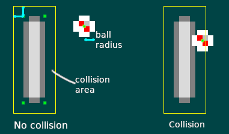

Отрисовка и перемещение мяча
В предыдущей главе мы узнали, как захватывать пользовательский ввод, чтобы заставить вещи двигаться на экране, при помощи систем. В этой главе будут использованы все знания, полученные нами в предыдущих главах, чтобы добавить в нашу игру новый объект: шар, который движется и подпрыгивает!
Во-первых, давайте определим некоторые другие полезные константы для этой главы в pong.rs:
pub const BALL_VELOCITY_X: f32 = 75.0;
pub const BALL_VELOCITY_Y: f32 = 50.0;
pub const BALL_RADIUS: f32 = 2.0;
Это также можно сделать с помощью внешнего файла конфигурации. Это особенно полезно, когда вы хотите много редактировать значения. Здесь мы делаем это просто.
Компонент Ball
В pong.rs давайте создадим компонент Ball.
extern crate amethyst;
use amethyst::ecs::prelude::{Component, DenseVecStorage};
pub struct Ball {
pub velocity: [f32; 2],
pub radius: f32,
}
impl Component for Ball {
type Storage = DenseVecStorage<Self>;
}
Мяч имеет скорость и радиус, поэтому мы храним эту информацию в компоненте.
Затем давайте добавим функцию initialise_ball так же, как мы написали функцию initialise_paddles.
extern crate amethyst;
use amethyst::prelude::*;
use amethyst::assets::{Loader, AssetStorage, Handle};
use amethyst::renderer::{Texture, SpriteRender, Sprite, SpriteSheet};
use amethyst::ecs::World;
use amethyst::core::transform::Transform;
use amethyst::ecs::prelude::{Component, DenseVecStorage};
pub struct Ball {
pub velocity: [f32; 2],
pub radius: f32,
}
impl Component for Ball {
type Storage = DenseVecStorage<Self>;
}
const PADDLE_HEIGHT: f32 = 16.0;
const PADDLE_WIDTH: f32 = 4.0;
const SPRITESHEET_SIZE: (f32, f32) = (8.0, 16.0);
const BALL_RADIUS: f32 = 2.0;
const BALL_VELOCITY_X: f32 = 75.0;
const BALL_VELOCITY_Y: f32 = 50.0;
const ARENA_HEIGHT: f32 = 100.0;
const ARENA_WIDTH: f32 = 100.0;
/// Инициализируем один мяч в середине арены
fn initialise_ball(world: &mut World, sprite_sheet_handle: Handle<SpriteSheet>) {
// Перемещаем.
let mut local_transform = Transform::default();
local_transform.set_translation_xyz(ARENA_WIDTH / 2.0, ARENA_HEIGHT / 2.0, 0.0);
// Назначаем спрайт для мяча
let sprite_render = SpriteRender {
sprite_sheet: sprite_sheet_handle,
sprite_number: 1, // Мяч идёт вторым спрайтом на спрайт-листе
};
world
.create_entity()
.with(sprite_render)
.with(Ball {
radius: BALL_RADIUS,
velocity: [BALL_VELOCITY_X, BALL_VELOCITY_Y],
})
.with(local_transform)
.build();
}
В предыдущей главе мы видели, как загрузить спрайт-лист и получить их отображение на экране. Запомните информация спрайт-листа хранится в pong_spritesheet.ron, а спрайт шара был второй, с индексом 1.
Наконец, давайте удостоверимся, что код работает так, как задумано, обновив метод on_start:
extern crate amethyst;
use amethyst::prelude::*;
use amethyst::assets::Handle;
use amethyst::renderer::{Texture, SpriteSheet};
use amethyst::ecs::World;
struct Paddle;
impl amethyst::ecs::Component for Paddle {
type Storage = amethyst::ecs::VecStorage<Self>;
}
struct Ball;
impl amethyst::ecs::Component for Ball {
type Storage = amethyst::ecs::VecStorage<Self>;
}
fn initialise_ball(world: &mut World, sprite_sheet_handle: Handle<SpriteSheet>) { }
fn initialise_paddles(world: &mut World, spritesheet: Handle<SpriteSheet>) { }
fn initialise_camera(world: &mut World) { }
fn load_sprite_sheet(world: &mut World) -> Handle<SpriteSheet> { unimplemented!() }
struct MyState;
impl SimpleState for MyState {
fn on_start(&mut self, data: StateData<'_, GameData<'_, '_>>) {
let world = data.world;
// Загрузка спрайт-листа необходима для отображения графики
let sprite_sheet_handle = load_sprite_sheet(world);
world.register::<Ball>(); // <- Временно добавим эту строку
initialise_ball(world, sprite_sheet_handle.clone()); // <- Добавим эту строку
initialise_paddles(world, sprite_sheet_handle);
initialise_camera(world);
}
}
Не забудьте вызвать clone для sprite_sheet_handle, потому что initialise_paddles и initialise_ball потребляет дескриптор.
Запустив игру сейчас, вы сможете увидеть два весла и мяч в центре. В следующем разделе мы собираемся заставить этот шар двигаться!
Перемещение мяча
Теперь мы готовы реализовать MoveBallsSystem в systems/move_balls.rs:
extern crate amethyst;
use amethyst::ecs::prelude::{Component, DenseVecStorage};
mod pong {
use amethyst::ecs::prelude::*;
pub struct Ball {
pub velocity: [f32; 2],
pub radius: f32,
}
impl Component for Ball {
type Storage = DenseVecStorage<Self>;
}
}
use amethyst::{
core::timing::Time,
core::transform::Transform,
core::SystemDesc,
derive::SystemDesc,
ecs::prelude::{Join, Read, ReadStorage, System, SystemData, World, WriteStorage},
};
use crate::pong::Ball;
#[derive(SystemDesc)]
pub struct MoveBallsSystem;
impl<'s> System<'s> for MoveBallsSystem {
type SystemData = (
ReadStorage<'s, Ball>,
WriteStorage<'s, Transform>,
Read<'s, Time>,
);
fn run(&mut self, (balls, mut locals, time): Self::SystemData) {
// Перемещаем каждый шар в соответствии с его скоростью и прошедшим временем
for (ball, local) in (&balls, &mut locals).join() {
local.prepend_translation_x(ball.velocity[0] * time.delta_seconds());
local.prepend_translation_y(ball.velocity[1] * time.delta_seconds());
}
}
}
fn main() {}
Эта система отвечает за перемещение всех мячей в соответствии с их скоростью и прошедшим временем. Обратите внимание, как метод join() используется для итерации по всем сущностям мячей. Здесь у нас есть только один мяч, но если нам когда-либо понадобится несколько, система будет обрабатывать и другие. В этой системе мы также хотим независимость от частоты кадров. То есть, независимо от частоты кадров, все объекты движутся с одинаковой скоростью. Для этого используется дельта времени, которое является продолжительностью с момента последнего кадра. Это обычно известно как ["delta timing"] delta-timing. Как видно из фрагмента, чтобы получить доступ к времени, прошедшему с момента последнего кадра, вам нужно использовать ресурс amethyst::core::timing::Time. У него есть метод, называемый delta_seconds, который делает именно то, что нам нужно.
Теперь, когда наш мяч может двигаться, давайте внедрим новую систему: BounceSystem в systems/bounce.rs. Он будет отвечать за обнаружение столкновений между шарами и ракетками, а также шарами и верхним и нижним краем арены. При обнаружении столкновения мяч отскакивает. Это делается с помощью изменения скорости компонента Ball оси x или y на отрицательную.
extern crate amethyst;
use amethyst::ecs::prelude::{Component, DenseVecStorage};
mod pong {
use amethyst::ecs::prelude::*;
pub struct Ball {
pub velocity: [f32; 2],
pub radius: f32,
}
impl Component for Ball {
type Storage = DenseVecStorage<Self>;
}
#[derive(PartialEq, Eq)]
pub enum Side {
Left,
Right,
}
pub struct Paddle {
pub side: Side,
pub width: f32,
pub height: f32,
}
impl Component for Paddle {
type Storage = VecStorage<Self>;
}
pub const ARENA_HEIGHT: f32 = 100.0;
}
use amethyst::{
core::{Transform, SystemDesc},
derive::SystemDesc,
ecs::prelude::{Join, ReadStorage, System, SystemData, World, WriteStorage},
};
use crate::pong::{Ball, Side, Paddle, ARENA_HEIGHT};
#[derive(SystemDesc)]
pub struct BounceSystem;
impl<'s> System<'s> for BounceSystem {
type SystemData = (
WriteStorage<'s, Ball>,
ReadStorage<'s, Paddle>,
ReadStorage<'s, Transform>,
);
fn run(&mut self, (mut balls, paddles, transforms): Self::SystemData) {
// Проверяем, не столкнулся ли мяч, и отскакиваем соответственно.
//
// Мы также проверяем скорость мяча каждый раз, чтобы предотвратить множественные столкновения
for (ball, transform) in (&mut balls, &transforms).join() {
let ball_x = transform.translation().x;
let ball_y = transform.translation().y;
// Отскакивание от вершины или нижней части арены.
if (ball_y <= ball.radius && ball.velocity[1] < 0.0)
|| (ball_y >= ARENA_HEIGHT - ball.radius && ball.velocity[1] > 0.0)
{
ball.velocity[1] = -ball.velocity[1];
}
// Отскакивание от ракетки
for (paddle, paddle_transform) in (&paddles, &transforms).join() {
let paddle_x = paddle_transform.translation().x - (paddle.width * 0.5);
let paddle_y = paddle_transform.translation().y - (paddle.height * 0.5);
// Чтобы определить столкнулся ли мяч с ракеткой, мы создаём больший
// прямоугольник вокруг текущего, вычитая радиус мяча из
// нижних координат, и добавляя радиус мяча к верхним.
// Мяч находиться внутри ракетки, когда его центр находится внутри большего
// прямоугольника-обёртки.
if point_in_rect(
ball_x,
ball_y,
paddle_x - ball.radius,
paddle_y - ball.radius,
paddle_x + paddle.width + ball.radius,
paddle_y + paddle.height + ball.radius,
) {
if (paddle.side == Side::Left && ball.velocity[0] < 0.0)
|| (paddle.side == Side::Right && ball.velocity[0] > 0.0)
{
ball.velocity[0] = -ball.velocity[0];
}
}
}
}
}
}
// Точка находится в прямоугольнике когда её координаты
// меньше или равны правому верхнему углу и больше или равны левому нижнему углу.
fn point_in_rect(x: f32, y: f32, left: f32, bottom: f32, right: f32, top: f32) -> bool {
x >= left && x <= right && y >= bottom && y <= top
}
fn main() {}
На следующем рисунке показано, как проверяются столкновения с ракетками.

Также не забудьте добавить mod move_balls и mod bounce в systems/mod.rs а также добавление наших новых систем к игровым данным:
extern crate amethyst;
use amethyst::prelude::*;
use amethyst::core::transform::TransformBundle;
use amethyst::window::DisplayConfig;
use amethyst::input::StringBindings;
fn main() -> amethyst::Result<()> {
let path = "./config/display.ron";
let config = DisplayConfig::load(&path)?;
mod systems {
use amethyst;
use amethyst::core::ecs::{System, SystemData, World};
use amethyst::core::SystemDesc;
use amethyst::derive::SystemDesc;
#[derive(SystemDesc)]
pub struct PaddleSystem;
impl<'a> amethyst::ecs::System<'a> for PaddleSystem {
type SystemData = ();
fn run(&mut self, _: Self::SystemData) { }
}
#[derive(SystemDesc)]
pub struct MoveBallsSystem;
impl<'a> amethyst::ecs::System<'a> for MoveBallsSystem {
type SystemData = ();
fn run(&mut self, _: Self::SystemData) { }
}
#[derive(SystemDesc)]
pub struct BounceSystem;
impl<'a> amethyst::ecs::System<'a> for BounceSystem {
type SystemData = ();
fn run(&mut self, _: Self::SystemData) { }
}
}
let input_bundle = amethyst::input::InputBundle::<StringBindings>::new();
let game_data = GameDataBuilder::default()
.with_bundle(TransformBundle::new())?
.with_bundle(input_bundle)?
.with(systems::PaddleSystem, "paddle_system", &["input_system"])
// ...другие системы...
.with(systems::MoveBallsSystem, "ball_system", &[])
.with(
systems::BounceSystem,
"collision_system",
&["paddle_system", "ball_system"],
);
let assets_dir = "/";
struct Pong;
impl SimpleState for Pong { }
let mut game = Application::new(assets_dir, Pong, game_data)?;
Ok(())
}
Теперь у вас должен быть мяч, движущийся и отскакивающий от ракетки и от верхней и нижней части экрана. Тем не менее, вы быстро заметите, что если мяч выходит за пределы экрана справа или слева, он никогда не возвращается и игра окончена. Вы можете даже не увидеть этого, так как мяч может быть уже за пределами экрана, когда появляется окно. Возможно, вам придется резко сократить BALL_VELOCITY_X, чтобы увидеть это в действии. Это, очевидно, не очень хорошее решение для реальной игры. Чтобы решить эту проблему и лучше увидеть, что происходит, мы должны порождать мяч с небольшой задержкой.
Создаём мяч с задержкой
Мяч теперь появляется и исчезает с экрана сразу после начала игры. Это может дезориентировать, так как вас бросают в игру и вы сразу теряете свое первое очко, прежде чем у вас было время, чтобы что то заметить. Нам также нужно дать время для операционной системы и средства визуализации для инициализации окна до начала игры. Обычно у вас есть отдельное состояние с игровым меню, так что это не проблема. Но наша игра бросает вас прямо в действие, поэтому мы должны решить эту проблему.
Давайте сделаем задержку до первого появления мяча. Это также хорошая возможность использовать структуру нашего игрового состояния для содержания некоторых данных.
Во-первых, давайте добавим новый метод в наше состояние: update. Давайте добавим метод update чуть ниже метода on_start:
extern crate amethyst;
use amethyst::prelude::*;
struct MyState;
impl SimpleState for MyState {
fn update(&mut self, data: &mut StateData<'_, GameData<'_, '_>>) -> SimpleTrans {
Trans::None
}
}
Этот метод позволяет вам переходить из состояния, используя его возвращаемое значение. Здесь мы не хотим изменять никакое состояние, поэтому мы возвращаем Trans::None.
Теперь нам нужно перенести создание ракетки в этот метод и добавить к нему некоторую задержку. Наш update запускает каждый кадр, таким образом, чтобы сделать что-то только один раз после определенного времени, мы должны использовать наше локальное состояние. Кроме того, обратите внимание, что для «initialise_paddles» требуется, чтобы мы предоставили «sprite_sheet_handle», но он был создан как локальная переменная внутри on_start. По этой причине мы должны сделать его частью состояния.
Давайте добавим несколько полей в нашу структуру Pong:
extern crate amethyst; use amethyst::renderer::SpriteSheet;
use amethyst::assets::Handle;
#[derive(Default)]
pub struct Pong {
ball_spawn_timer: Option<f32>,
sprite_sheet_handle: Option<Handle<SpriteSheet>>,
}
Наш таймер представлен параметром Option <f32>, который будет отсчитываться до нуля, когда доступен, и будет заменен на None после того как пройдёт время. Наш дескриптор спрайт-листа также находится внутри Option, потому что мы не можем создать его внутри конструктора Pong. Вместо этого он будет создан внутри метода on_start.
Мы также добавили #[derive(Default)], который автоматически реализует для нас черту Default, которая позволяет создавать пустое состояние по умолчанию. Теперь давайте используем это в нашем коде создания Application в main.rs:
extern crate amethyst;
use amethyst::{
ecs::{World, WorldExt},
prelude::*,
};
#[derive(Default)] struct Pong;
impl SimpleState for Pong { }
fn main() -> amethyst::Result<()> {
let game_data = GameDataBuilder::default();
let assets_dir = "/";
let world = World::new();
let mut game = Application::new(assets_dir, Pong::default(), game_data)?;
Ok(())
}
Теперь давайте закончим наш код созданием таймера и мяча. Мы должны сделать две вещи:
- Сначала мы должны инициализировать наше состояние и удалить
initialise_ballизon_start; - После мы должны инициализировать мяч функцией
initialise_ballодин раз по истечении времени внутриupdate.
extern crate amethyst;
use amethyst::{assets::Handle, renderer::SpriteSheet};
use amethyst::prelude::*;
use amethyst::core::timing::Time;
struct Paddle;
impl amethyst::ecs::Component for Paddle {
type Storage = amethyst::ecs::VecStorage<Self>;
}
struct Ball;
impl amethyst::ecs::Component for Ball {
type Storage = amethyst::ecs::VecStorage<Self>;
}
fn initialise_ball(world: &mut World, sprite_sheet_handle: Handle<SpriteSheet>) { }
fn initialise_paddles(world: &mut World, spritesheet: Handle<SpriteSheet>) { }
fn initialise_camera(world: &mut World) { }
fn load_sprite_sheet(world: &mut World) -> Handle<SpriteSheet> { unimplemented!() }
#[derive(Default)] pub struct Pong {
ball_spawn_timer: Option<f32>,
sprite_sheet_handle: Option<Handle<SpriteSheet>>,
}
impl SimpleState for Pong {
fn on_start(&mut self, data: StateData<'_, GameData<'_, '_>>) {
let world = data.world;
// Ждём одну секунду, прежде чем создать мяч.
self.ball_spawn_timer.replace(1.0);
// Загрузка спрайт-листа, необходимого для визуализации графики.
// `spritesheet` это расположение спрайтов на изображении;
// `texture` это данные пикселей.
self.sprite_sheet_handle.replace(load_sprite_sheet(world));
initialise_paddles(world, self.sprite_sheet_handle.clone().unwrap());
initialise_camera(world);
}
fn update(&mut self, data: &mut StateData<'_, GameData<'_, '_>>) -> SimpleTrans {
if let Some(mut timer) = self.ball_spawn_timer.take() {
// Если время таймера еще не истекло, вычтите время, прошедшее с момента последнего обновления.
{
let time = data.world.fetch::<Time>();
timer -= time.delta_seconds();
}
if timer <= 0.0 {
// Когда таймер истекает, появляется мяч
initialise_ball(data.world, self.sprite_sheet_handle.clone().unwrap());
} else {
// Если время таймера еще не истекло, возвращаем его в состояние.
self.ball_spawn_timer.replace(timer);
}
}
Trans::None
}
}
Теперь наш мяч появится только после заданной задержки, что даст нам немного времени перед запуском. Это позволит нам увидеть, что происходит с мячом сразу после его появления.
Подведём итог
В этой главе мы наконец добавили мяч в нашу игру. Как всегда, полный код доступен в репозитории Amethyst. В следующей главе мы добавим проверку системой, когда игрок проигрывает игру, и добавим систему начисления очков!
Документация была переведена специально для сообщества "rust_lang_ru".